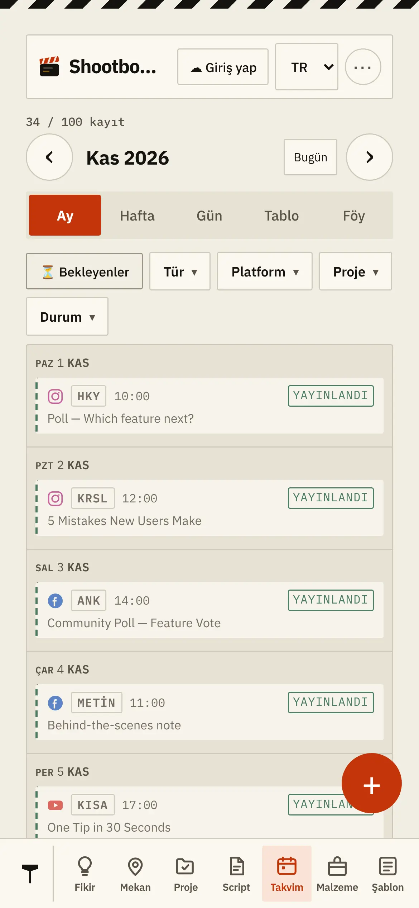
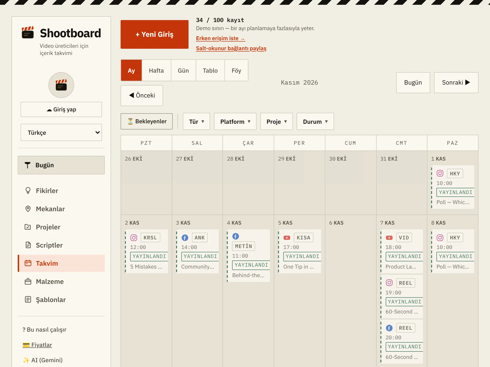
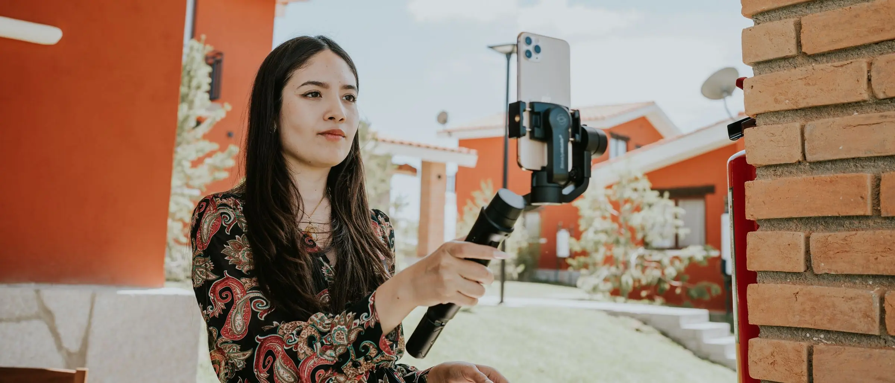
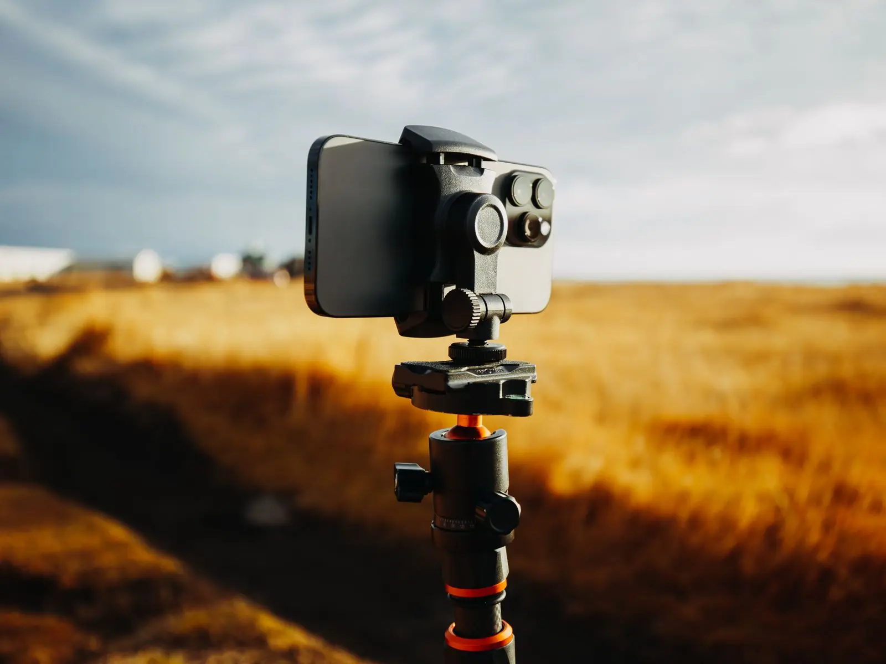
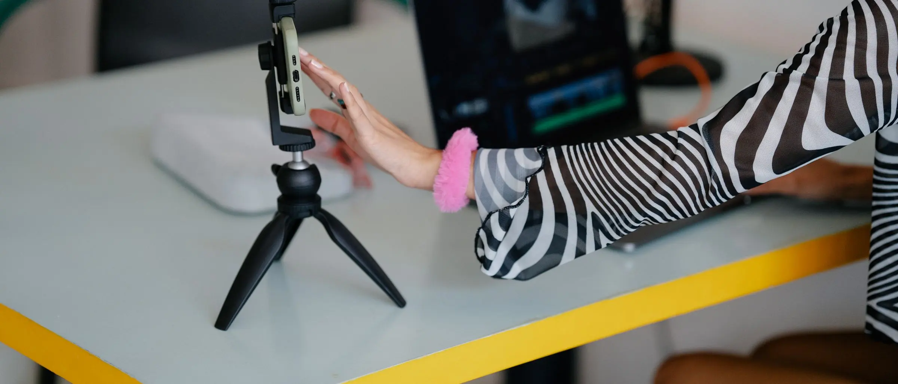

Takvim
Ay, hafta, gün, tablo ve föy. Bekleyenler üstte; giden iş yeşile dönüyor.
Aynı görüntü Reel olarak, Short olarak, carousel ve hikâye olarak çıkıyor — her birinin kendi açıklaması, kapak yazısı ve saati var. Shootboard hangisinin gittiğini, hangisinin beklediğini tutar.
Hesap açmadan da çalışır — takvimin o tarayıcıda kalır. Giriş yaparsan aynı plan telefonuna da gelir.


Plan yaptığın yerler
⛔ Shootboard bu platformların hiçbirine bağlanmaz ve senin adına hiçbir yere gönderi atmaz. Planı tutar; yayınlayan sensin.
Çalışma biçimi
Çoğu kişi bunu takip etmek için bir tabloya, bir not defterine ve üç ayrı sohbete birden bakıyor. Sıradan bir takvimden farkı şu: Shootboard paylaşımın arkasındaki üretim işini de tutuyor — script yazıldı mı, çekim yapıldı mı, kurgu bitti mi, izin alındı mı.
VIDYouTube — uzun video
KISAYouTube — Short
REELInstagram — Reel
KRSLInstagram — carousel
HKYHikâye — iki platform
METİNThreads — metin postu

Adres, izin notu, "burada dikkat edilecekler" ve o günün altın saati aynı kayıtta.
On iki parça, tek pano
Ay, hafta, gün, tablo ve föy. Bekleyenler üstte; giden iş yeşile dönüyor.
Aklına gelen, çekime dönmeden önce burada bekliyor.
Adres, izin durumu, park notu ve o yerin gün doğumu–gün batımı.
Bir çekimden çıkan tüm paylaşımlar aynı projeye bağlı duruyor.
Metin, kayıtla aynı yerde. Çekim günü aramak gerekmiyor.
Yanına alacakların ve orada yapacakların hazır listelerle.
Üretim akışı
Ağır bir proje yönetimi yazılımı değil. Her kaydın hangi adımda olduğu tek bakışta görünüyor.

Hava ve ışık
Mekânın gün doğumu, gün batımı ve altın saati hesaplanıyor — çekim gününü oraya göre koyabiliyorsun. Hangi günün hangi saati, kaydın içinde.
Masada ve sahada
Giriş yaparsan aynı plan ikisinde de aynı. Hesapsız kullanırsan takvimin o tarayıcıda kalır — hiçbir şey zorunlu değil.

Bir çekimi panoya koyuyorsun, çıkacak paylaşımları altına diziyorsun.
Sınırı baştan yazalım
Üçü de bilinçli tercih. Sonradan şaşırmayasın diye en başta yazıyoruz.
Hesaplarına bağlanmaz, senin adına hiçbir yere gönderi atmaz. Platform kuralı değiştiğinde çalışmaz hale gelen araçlardan olmak istemedik.
İzlenme ve beğeni saymaz. O işi platformların kendi araçları zaten yapıyor.
Yedi adımlık bir üretim akışı var, o kadar. Kurulum yok, eğitim yok.
Fiyatlar
Tarayıcıda, hesap açmadan deneyebilirsin. Planlar ve neyin neye dahil olduğu ayrı sayfada yazılı.
Kayıt gerekmiyor. Açtığın anda dolu bir örnek hafta seni karşılıyor; beğenmezsen tek düğmeyle siliyorsun.